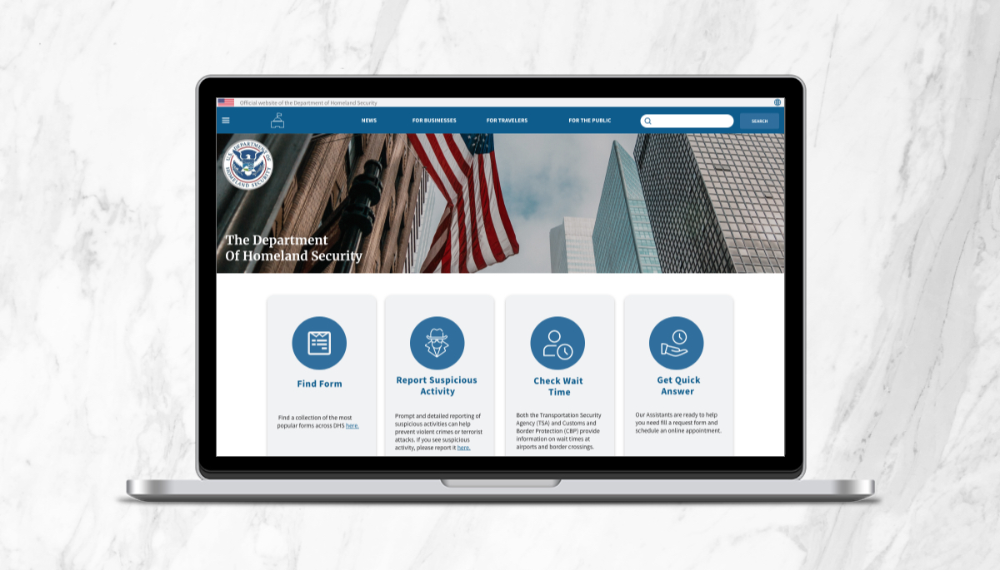

The Department of Homeland Security



Project information
- Category: Government Agency Website - UI Redesign Case Study
- Client: UofM Academic Project
- Project date: 04 November, 2020
Problem: An enormous amount of information makes it difficult to use and navigate around the website.
Solution: Redesign the website in a minimalistic and modern way to help users simplify the information search.
Tools: Miro | Figma | Adobe Illustrator | Adobe Photoshop | Adobe XD | Microsoft Excel | Google Workspace
Timeline: 5 weeks - individual project